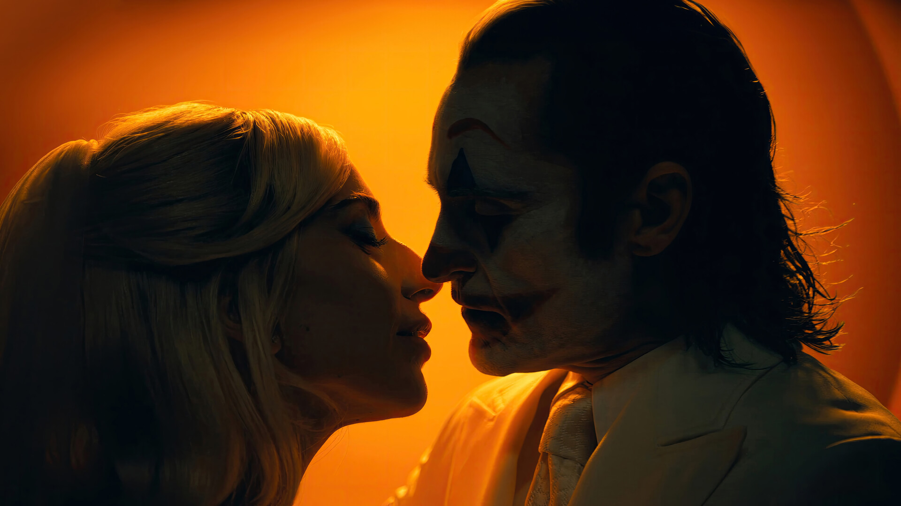

When you think of watching a movie that revolves around Joker, one of the most notorious and dark villains of all time, what do you expect? Maybe a fantastic tale of him running rampant in Gotham City or a taste of his wicked and dark humor you know, the things Joker is known for? Well, whatever you may have expected to see in Joker 2, I’m sorry to tell you that you are not going to get it. After the success of Joker, which gave us a truly fantastic tale of the villain’s origin I had a lot of expectations from this sequel but as it turns out, the creators of Joker 2 presented us with something nobody asked for. So, in this Joker 2 review let’s talk about how one of the most anticipated movies of 2024 turned out to be a joke.
For the Love of God, Enough with the Songs
You know what when Joker 2 was first announced to be a musical, I still believed that they were going to make a good movie with some songs here and there which would have made some sense. However, if you walk into a theater playing Joker 2, you will find a lot of songs with a little movie here and there. Most of the time when Arthur breaks into songs in the movie, it’s usually a response to someone saying something or him feeling something. Now my question is, what was the point of putting in a whole song instead of a nice dialogue?
Initially, I am not going to lie, the first couple of songs feel nice but after that, it starts feeling like “Oh no not again” every time Arthur and Harley break into a song. Now, if you have decided to make it a complete musical, at least put in songs related to the scene’s situation. Except for some songs, most of them don’t fit in the scene and it’s such a pain to watch trying to understand the context.
Overall, making Joker 2 into a musical was not a good idea because when you try to do something new, you are not supposed to forget to stay true to what people want from you. It seems like Warner Bros and Todd were blinded by the success of Joker and decided to take a chance with the sequel while being certain of its success.
Expressions and Lady Gaga Can’t Sail in the Same Boat
Have you heard of the expression “One Bad Apple Makes The Whole Lot Go Bad”? Well, Lady Gaga was the bad apple in the context of Joker 2. Her performance on screen looked like someone had a lot to drink on a weekend but had to walk into work with a hangover trying their best to hide it from their boss. Lady Gaga has the most balanced acting in the whole movie because, throughout the massive screen time of Joker 2, she carried the same expressions.
Other than her, all the actors did a good job. Joaquin Phoenix was phenomenal as the Joker just like he was in the previous movie, however, a good screenplay is not enough to make a movie good. I want to make this very clear that even though the movie is a complete mess, Joaquin Phoenix gave his all.
The way he is silent yet so expressive, from being softspoken to threatening, and how he carried out the personality shift while he was dressed as the Joker with a southern accent, it was all fantastically done. When it comes to playing the character, Joaquin Phoenix deserves appreciation and I stand by it. However, the charm of Joaquin’s acting was overshadowed by the “I’m not an actor but I’m gonna act” energy of Lady Gaga, and I hated that from my very core.
I Get What Todd Phillips Wanted to Do but It Didn’t Work
Now, while watching the movie, I tried to understand how the director who made such a fantastic Joker movie could create something like this, and after watching the movie thoroughly, I know what went wrong. It seems as if the vision Todd Phillps was chasing had to do something with creating a tale influenced by on-stage dramas or plays. It is evident by the death of Arthur in the end since he has completed his character arc just as you would see in a drama being enacted on a stage. The way the story of Joker 2 unfolds with songs and chronicles makes you feel as if you are watching a play on stage with meanings you have to decipher for yourself.
However, making such a movie takes a lot of detailing which was missing in Joker 2 and hence the whole structure fell apart. Now, I do appreciate the idea behind Joker 2 but the poor execution of Joker 2 has made Todd Phillips a jester in front of the audience. If more attention had been paid to the details, even with all the songs and Lady Gaga’s pathetic screenplay, it could have turned out to be a decent movie.
Joker 2 Is Todd Phillips’ and Warner Bros.’ Folie à Deux

Yes, of course, you should watch Joker 2 so that if you are interested in making a career in filmmaking, you know what not to do. As far as I feel, the entire fault for the mess Joker 2 has made lies with the directors and the producers of the movie. I’ve said it once and I will say it again, making this movie a musical was a massive mistake. It significantly increased the screen time of the movie and added little to no value to it.
The most unnecessary element in Joker 2 was certainly the death of Arthur in the end. Todd Phillips might have thought that he would end the Joker franchise with this movie because he and Warner Bros. were certain regarding the success of Joker 2. However, as it is obvious, it turned out to be their “Folie à Deux” or a shared delusion, and what could have been a great end to a franchise turned into a massive disaster. I would not recommend anyone to watch Joker: Folie à Deux in theaters.
.svg)